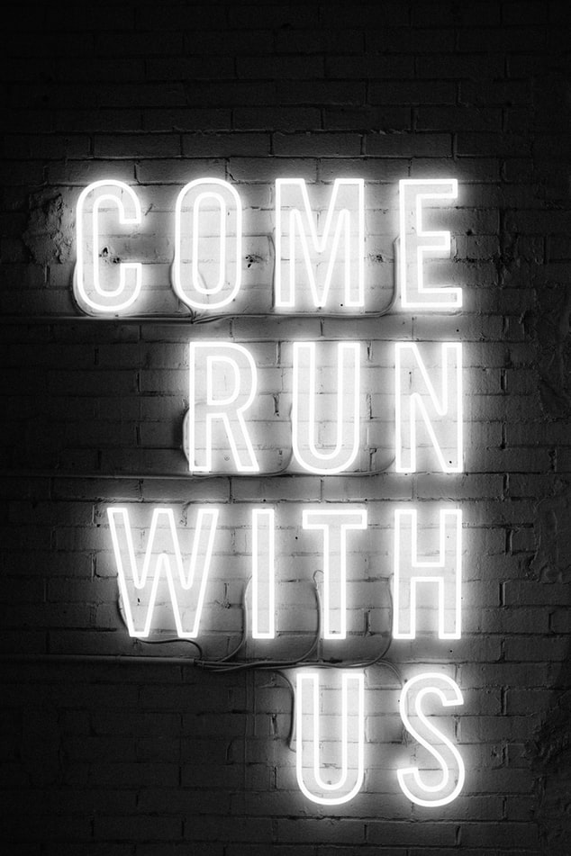
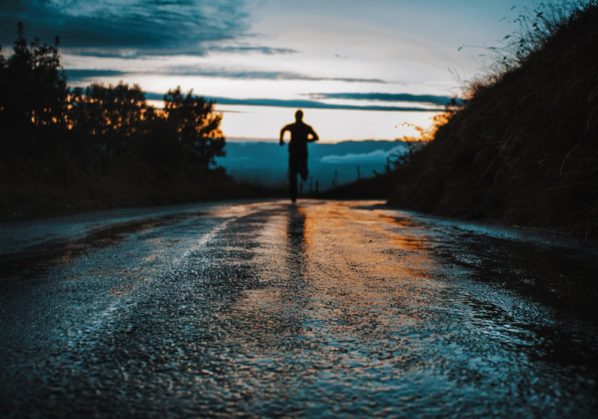
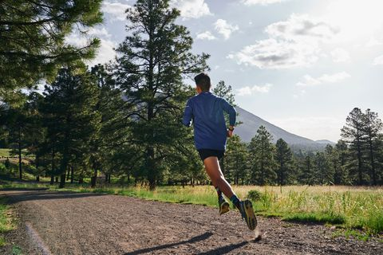

My name is Mo. I'm from the Middle East(half Iraqi &half Jordanian).
I came to the USA 7 years ago and have lived here in San Francisco for the last five.
I love this city and exploring all of the unique areas.The Mission is one of my favorites. Over the last year
I have found a love of running and I like to run every day about 2-3 miles.

Running means a lot to me
because it helps improve my mood and
keep negative thoughts out of my mind.
I have found running to be very meditative and calming
Additionally, running has helped me lose weight and stay healthy
After I have run a few miles I feel accomplished and that
I have met a good goal

instruct running
In order to start running as a hobby, there are some key things you should do.
The first would be to run or run/walk 20-30 minutes a day, two days a week.
As well, it would be a good idea to take a long run or run/walk on the weekends, about 40 minutes to an hour.
Ideally, you would run at a conversational pace, which means you aren't so out of breath that you can't talk to someone.
Consider taking regular walk-breaks throughout your week,
and on rest days, cross-train to buildmuscle strength

The 10 Best Places To Run In San Francisco
Crissy Field. With expansive views of the Bay, Alcatraz, and the Golden Gate Bridge, Crissy Field is a wonderful place to spend the day